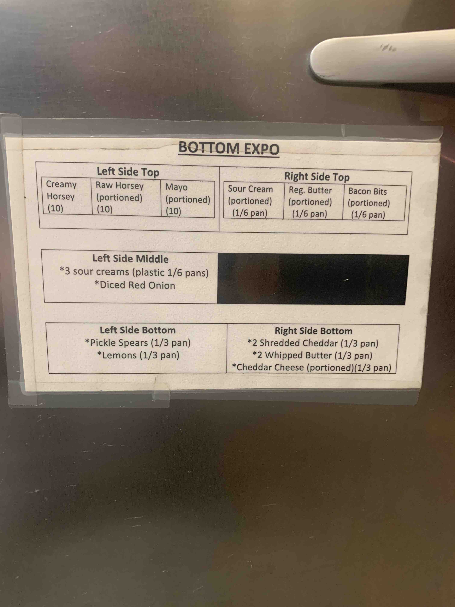
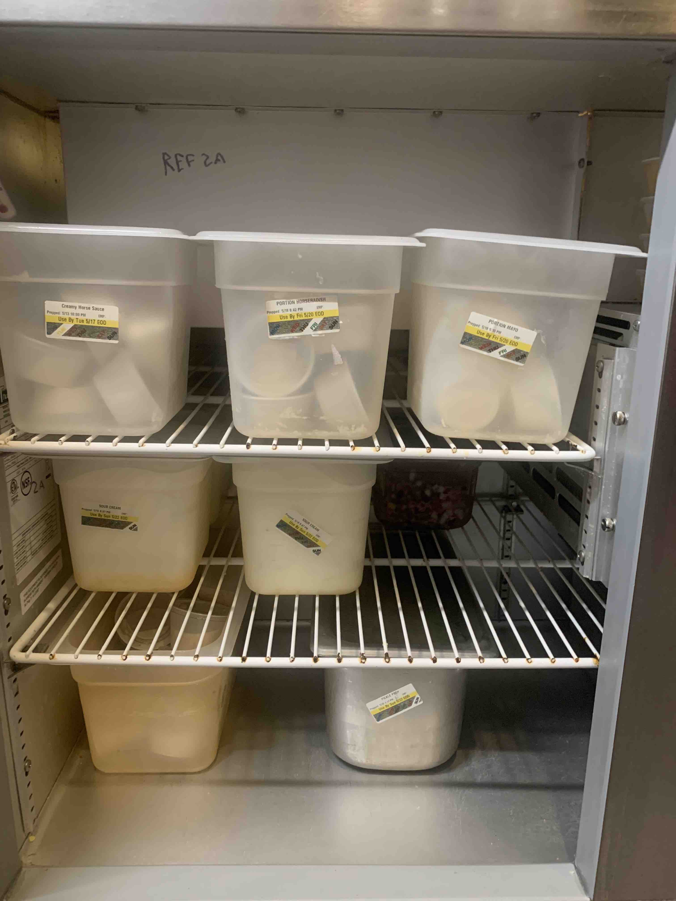
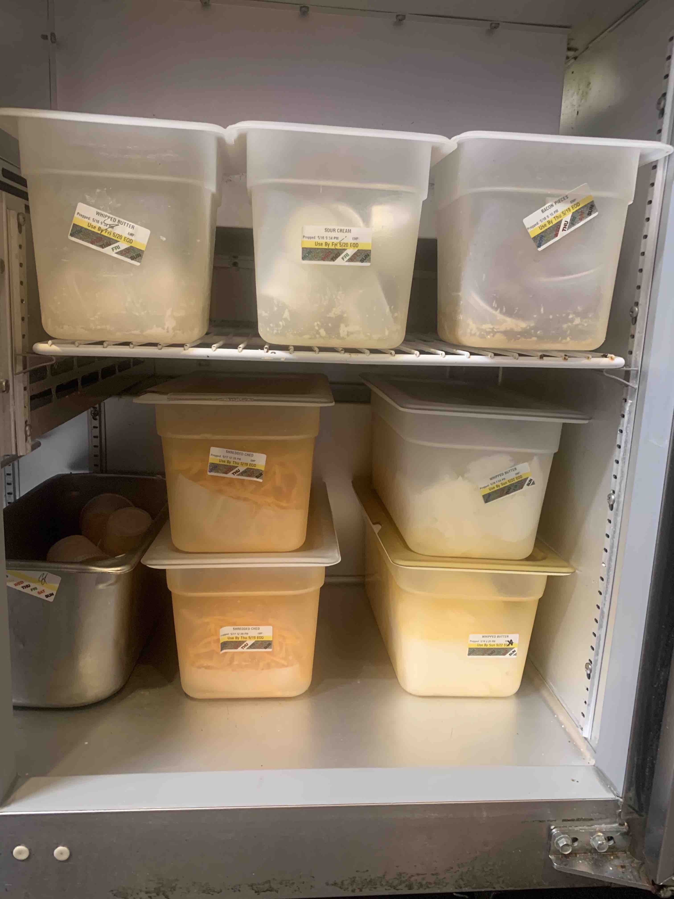

- First and Foremost, there is a guide right on the station for if you need it.

- This is completely accurate. You need to clean the inside of the station, and wipe the gaskets on the door.
- The left side of the station will look like:

- The right side of the station will look like:

- If you have any questions, feel free to ask a manager or checker!